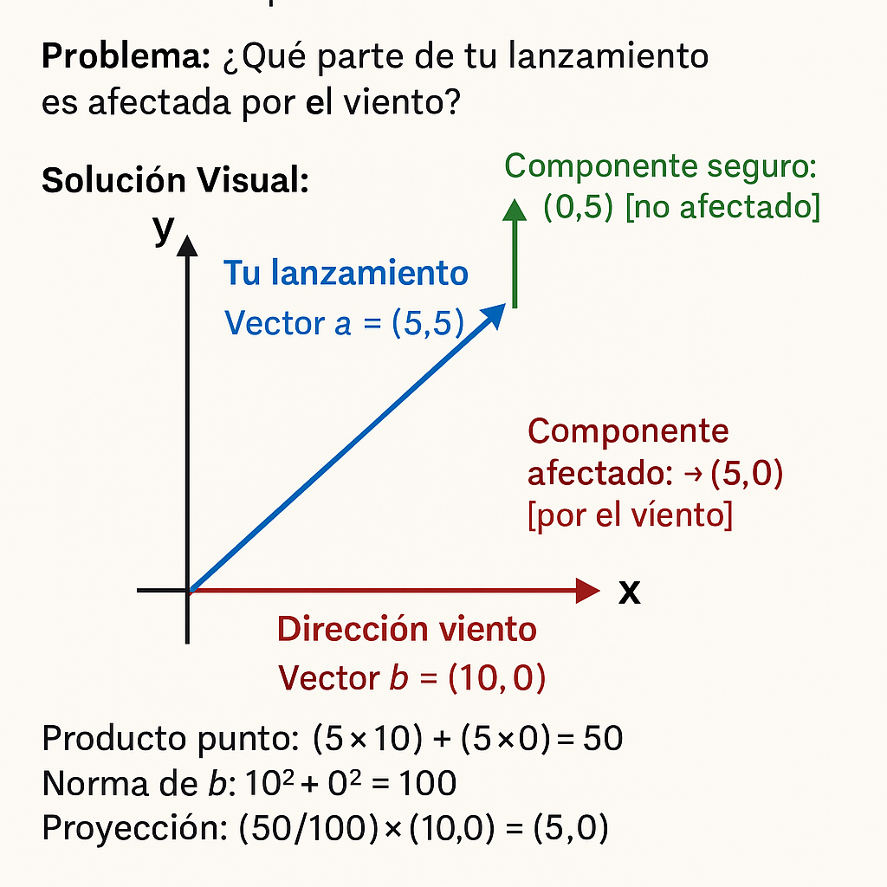

📌 Ejemplo Sencillo: Lanzar una Pelota en Diagonal
Imagina que estás jugando béisbol en un campo con viento:
- Tu lanzamiento (vector A): 5 metros hacia adelante (eje Y) + 5 metros hacia la derecha (eje X) → Vector A = (5,5).
- Dirección del viento (vector B): Sopla exactamente hacia la derecha → Vector B = (10,0).
💡 Problema: ¿Qué parte de tu lanzamiento es afectada por el viento?
📌 Solución Matemática
Dibuja los vectores:
- Tu lanzamiento: ↗ (5,5)
- Dirección viento: → (10,0)
💡 Cálculo de la proyección:
✔ Producto punto: (5×10) + (5×0) = 50
✔ Norma de B: 10² + 0² = 100
✔ Proyección: (50/100) × (10,0) = (5,0)
📌 Interpretación
💡 Conclusión: Solo 5 metros horizontales de tu lanzamiento son empujados por el viento.
Los otros 5 metros verticales no son afectados.


📌 ¿Por qué importa?
- ✔ Explica por qué los home runs se desvían con el viento lateral.
- ✔ Ayuda a calcular la trayectoria real de la pelota.